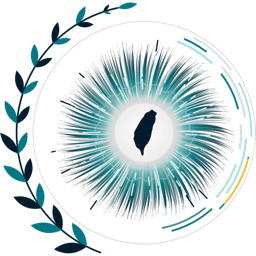
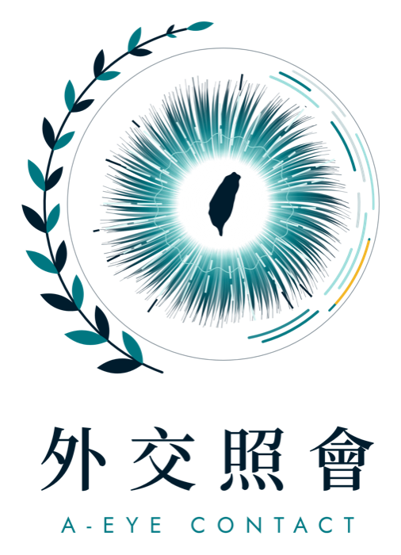

Three examiners
They speak in real time, acknowledge what you say, follow up, and cut in when time is up. Each has a different questioning style.
In development. Specification complete, code not started.
Three AI examiners ask, follow up and track your weak points. Built for Taiwan's Diplomatic Service Examination.
The oral stage includes a group interview in Mandarin, where a panel asks and presses with follow-ups under a time limit. Practice usually depends on classmates or a tutor playing the panel, and nobody tracks which weaknesses keep coming back.
This is how a session is specified to run. None of it runs yet.
The system picks a question, weighted toward the weak points in your profile.
One of three AI examiners asks it aloud, through a realistic video avatar.
You answer. The answer is recorded and transcribed.
Once you finish, the answer is scored on ten indicators.
The rule engine decides whether to press or move on. Claude writes the follow-up, and an examiner asks it.
After the session, a written report quotes your own words as evidence and updates your profile.

Timing, turn order and follow-up limits are enforced by code. Models only write content.
As set out in specification v0.3. Every module below is specified and none is built yet.
They speak in real time, acknowledge what you say, follow up, and cut in when time is up. Each has a different questioning style.
Realistic faces with lip-sync, custom-made with East Asian likenesses.
Time, question count, follow-up limits, who speaks next, and the event log.
Eight indicators scored against a fixed questionnaire after every answer, two more computed directly.
Writes the actual follow-up question, inside the type the rule engine has chosen.
Question-by-question feedback that quotes the transcript as evidence, with practice methods.
Remembers recurring weak points, weights the next questions toward them, and shifts the mix in three phases as the exam date approaches.
Records stay on the user's machine as plain notes, synced through Google Drive. One folder per user, one shared question bank.
The specification was drafted and cross-reviewed with Claude, and the code will be written with Claude Code. There is no separate engineering team.
Claude Opus 5.5 is the designated model for follow-up questions during a session and for the report after it. Voice and avatars stay with GPT-Live and HeyGen. Claude does the reasoning behind them.
The specification has been through one round of cross-review by Claude and GPT. The name, logo and concept trailer are done.
Open:six technical questions, including the three examiner voices, the HeyGen integration and the profile data structure.Users and revenue:none yet.
Build it for a single user and test it against the 12 criteria.
New questions drafted weekly from about 330 current-affairs notes, checked for political sensitivity, used only after human review.
A second module with its own pace and style of questioning.
A shared question bank, with each person's records kept separate.
The same structure could later serve other professional interviews and spoken language assessments. That is an idea, not a plan yet.

A-EYE CONTACT is an independent, self-funded project based in Taipei, Taiwan. It is built by one person, who is also a candidate for the examination it trains for. There is no registered company and no outside investment.
The Chinese name, 外交照會, means a diplomatic note. The English name reads two ways: AI, and eye contact.
A-EYE CONTACT avails itself of this opportunity to renew to the reader the assurances of its highest consideration.